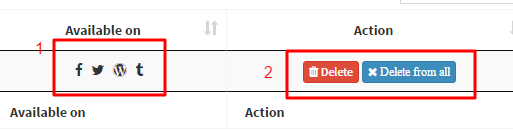

Hello!
Welcome to Optimus Prime the social media marketing tool, we hope you enjoy it as much as we enjoyed building it! To help you along, we’ve put together some documentation that will help you to get started.
In this document, you’ll find useful information on how to get the most out of the application. We built some amazing features and want to know exactly how to use these.
Here you’ll learn everything from how to use this application, including setting up the application and installation.
Last but not least, have fun! We can’t wait to see what amazing service you guys build with our application!
Best of luck, Prappo Prince
Just put Optimus's files in your web server and yah! you are ready to go. We used a portable sqlite database. So, No database require or installation process. To help you we made a video how can you upload files in your webserver using cpanle if you don't know. Watch this video.
Now you need to configure your social media settings. Follow the following steps.
# Facebook Settings
# Twitter Settings
# Tumblr Settings
To get realtime notifications we used Pusher. This is how you can configure Pusher / Notifications settings
This is another good feature of Optimus Prime. You can delete your all posts form facebook, twitter, tumblr, wordpress at once by simply clicking "Delete form all" button .

1.You can see where this post exists .
2.You can delete form software database and from all social media where its already exists
Hopefully you can use rest of the features without any hesitation.
I’d be glad to help you if you have any questions relating to this application. I’ll do my best to assist you query relates anything to this application (if possible). Please, do feel free to send me an email at prappo.prince@outlook.com
Thank you for using this great stuff ,